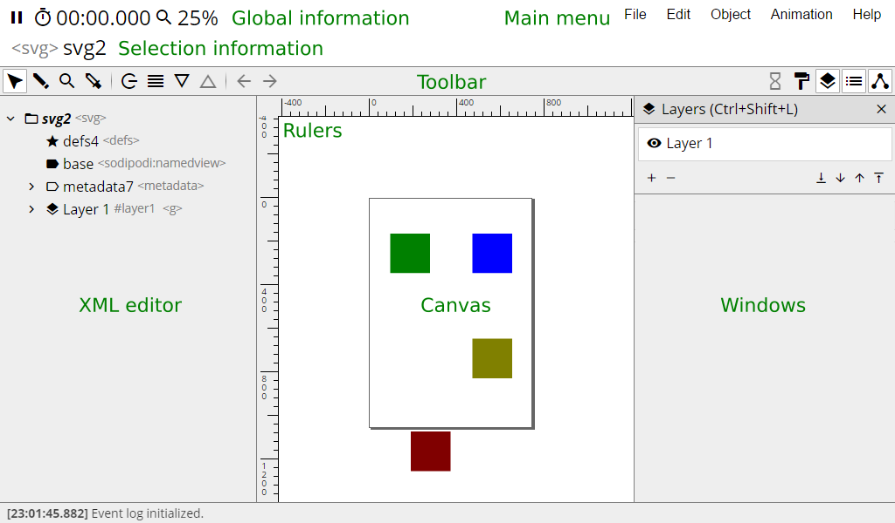
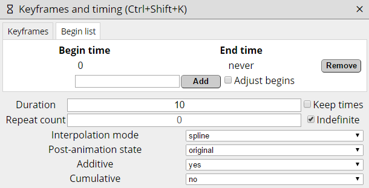

Introduction
This document serves as user manual for the aniGen editor, version 0.7.3.
The manual describes the interface, controls and files, provides a basic explanation of SVG animation, and a set of examples which can serve as basic tutorials.
About editor
AniGen is a browser-based SVG animation editor. It is designed to work in tandem with Inkscape, expanding its functionality
to allow the user to animate vector images, as well as export them. Transfer of files between the editors should work without loss of information.
AniGen is free software available as is. It is written and maintained by Ondřej 'Aibo' Benda, and covered by GPLv3 license. The editor is currently in testing phase. Please take a moment to encounter any bugs you encounter.
For more information about SVG format, see the format's specification.
Compatibility
The editor is developed mainly on Google Chrome, and should also work reasonably well on Mozilla Firefox.
Compatibility with other browsers is not the editor's main objective. To use the editor, JavaScript needs to be enabled.
User interface

The main window of aniGen (shown above) consists of seven main sections:
- Main menu
- Global information
- Selection information
- Toolbar
- Canvas
- XML editor
- Windows
The XML editor and windows are toggled by the icons on right side of toolbar.
Selection information
Shows information about currently selected element:
- Tag name - see Elements and the XML tree.
- Identifier - or the element's unique name.
- Layer name (optional) - if an Inkscape layer is selected, its name is displayed here.
- Animation group name (optional) - if animated group is selected, its group name is displayed here (see animated groups).
Selection information of a layer. Left to right: tag name (g for group), identifier ("layer1"), inkscape's group name ("mouth").
 Selection information of an animated group. Left to right: tag name (g for group), identifier ("g4138"), group type ("animation group"), group name ("mouth-female-3q").
Selection information of an animated group. Left to right: tag name (g for group), identifier ("g4138"), group type ("animation group"), group name ("mouth-female-3q").
Canvas
The visual representation of SVG document. The page (area exported as animation) is specified by the gray border. Page size can be set in Inkscape. See also controls and tools.
XML editor
The XML editor allows quick navigation through the SVG's elements. Branch elements (i.e. elements with children)
can be opened by clicking the  button, displaying their children in standard tree fashion. These elements can also be selected by double-clicking.
Leaf elements (i.e. elements with no children) can be selected by single click.
button, displaying their children in standard tree fashion. These elements can also be selected by double-clicking.
Leaf elements (i.e. elements with no children) can be selected by single click.
XML editor is useful for quick navigation between elements, as well as selecting animations, which have no direct graphical representation to click.
Elements are shown (from top to bottom) in order of rendering, meaning the lowest elements will be on top of the drawing.
Elements in XML tree have specific icons. White icons indicate the element has children:
Keyframes and timing
 Keyframes window shows the keyframes and timing of currently selected animation.
(See animation for more details.)
Keyframes window shows the keyframes and timing of currently selected animation.
(See animation for more details.)
While details may vary, each keyframe generally has a percentage (its position relative to the duration of the animation), time (the same, as time relative to the animation's beginning) and one or more values.
Animations with the spline interpolation mode also show the respective splines between every pair of keyframes.
Splines can be changed between various presets or a custom value can be given instead.
Clicking the percent or time value allows you to change it, with certain restrictions. First (0%) and last (100%) keyframes' times cannot be changed. Keyframes between any other two can only be changed in the interval between their
neighbours (e.g. the selected keyframe can only be set between 0% and 50%, or 0 and 5 seconds respecively).
Keyframes can be selected by clicking the striped button on the left. To select multiple frames, hold ctrl. Holding shift will select all frames between the furthest already selected frame and the frame clicked.
Values can be changed with standard input fields. If multiple keyframes are selected, all of their values are changed when you change one. It's also possible to drag the keyframes to switch their values with one another,
or move them up and down with page up / page down. Selected keyframes can be duplicated with ctrl+d and deleted with delete.
Selected keyframes are affected by the context menu (right click). If none is selected, the clicked keyframe is affected, except the cases noted below.
 Move up - moves the keyframe's values and spline (if applicable) up.
Move up - moves the keyframe's values and spline (if applicable) up. Duplicate - creates copy of keyframe(s)
Duplicate - creates copy of keyframe(s) Move down - moves keyframe(s) down
Move down - moves keyframe(s) down Balance keyframes - sets the selected keyframes in even intervals between one another. First and last keyframes of each block of selected frames are not affected. If no frames are selected, all keyframes are affected instead.
Balance keyframes - sets the selected keyframes in even intervals between one another. First and last keyframes of each block of selected frames are not affected. If no frames are selected, all keyframes are affected instead. Invert values (when applicable) - inverts the values of selected keyframes. If no keyframes are selected, all are affected. Inversion is applicable in following cases:
Invert values (when applicable) - inverts the values of selected keyframes. If no keyframes are selected, all are affected. Inversion is applicable in following cases:
- Translation - X and Y values are multiplied by minus one.
- Rotation and skewing - Angle values are multiplied by minus one.
- Scaling - X and Y values inverted (changed to 1/X and 1/Y).
- Attribute animation - only if the affected attribute is display or visibility - values are changed to their opposites.
 Remove keyframes - deletes selected keyframes (except first and last keyframe).
Remove keyframes - deletes selected keyframes (except first and last keyframe).
The second tab of the window shows a list of begin times, that is times when animation will start (see duration, repetition, and begins for more details).
New begins can be added by inputing a time (in seconds) in the field below the list, and selecting "add". Begins are removed by the buttons on their right. The end time given for each begin time is the time when the given set of loops (if applicable) of animation ends -
if two loops overlap, the animation resets at the later begin value.
Files
Opening and saving SVGs
AniGen only works with existing SVG files (preferably created with Inkscape). They can be opened by clicking the icon, or by dropping the file on it.
Importing
Files can be imported by dragging them into the editor's canvas. Imported files include SVGs, JPEGs and PNGs. Raster files (JPEGs and PNGs) will be appended to the currently selected container object.
SVGs will be merged, i.e. all elements container in the root SVG element will be moved to the current SVG's root element, and the contents of defs
(clip paths, gradients, animation states etc.) will be moved to current defs.
It's recommended to save file before importing.
Exporting
 Current SVG can be exported as a series of PNGs archived in a ZIP.
The dialogue allows the user to set the beginning of the animation (in seconds), duration of exported animation (in seconds) and the framerate (in frames per second).
Current SVG can be exported as a series of PNGs archived in a ZIP.
The dialogue allows the user to set the beginning of the animation (in seconds), duration of exported animation (in seconds) and the framerate (in frames per second).
 While rendering, the editor will be unavailable. Progress and estimated time to completion (HH:MM:SS) is shown.
The rendering process can take significant time, which scales with the number of elements in the SVG. Furthermore, each PNG is stored in the computer's memory. It's recommended to export longer animations,
or animations with extremely large size, in smaller segments. Rendering process can be canceled (with slight delay).
While rendering, the editor will be unavailable. Progress and estimated time to completion (HH:MM:SS) is shown.
The rendering process can take significant time, which scales with the number of elements in the SVG. Furthermore, each PNG is stored in the computer's memory. It's recommended to export longer animations,
or animations with extremely large size, in smaller segments. Rendering process can be canceled (with slight delay).
 When all frames are rendered, they are packed into a ZIP, which then triggers the standard save dialogue of the browser.
This process takes some time, but comperatively little to the rendering process.
When all frames are rendered, they are packed into a ZIP, which then triggers the standard save dialogue of the browser.
This process takes some time, but comperatively little to the rendering process.
Exporting is currently in testing phases. If you enounter problems (such as differences between the SVG's animation and exported frames), see bug reporting.
Elements and the XML tree
An SVG is an XML format, meaning the file is composed of elements. In code, these usually appear as pairs of tags similar to this:
<svg id="green"></svg>
In this example, svg is the element's tag name, id is a name of an attribute (in this case an identifier), and green is this attribute's value. <svg> is the opening tag and </svg> is the closing tag.
An element can have various attributes. Some are shared betwen different types of elements, like id or transform, others are exclusive to certain type of element, like dur (animation duration).
Most elements can have children, that is, other elements between the opening and closing tags.
<svg id="green">
<g id="group"></g>
</svg>
In this case, the g element is a child of the svg element.
An SVG file will usually have single svg element as its root, and all other elements will be its children, or the children of its children (and so on). This is called "nesting" and creates a tree structure depicted in the XML editor.
All SVGs share these basic properties.
Attributes
As mentioned above, elements can have various attributes. For example:
<rect
id="rectangle1"
x="10"
y="20"
width="50"
height="100"
fill="red"
>
</rect>
The code above defines a rectangle (rect element). Its top left corner is denoted by the given x and y attributes, its width and height by attributes of the same name (all sizes default to pixels).
Furthermore, its fill color is set to "red", equal to the hexadecimal value of #ff0000.
Were one of the attributes changed, e.g.
<rect
id="rectangle1"
x="50"
y="20"
width="50"
height="100"
fill="red"
>
</rect>
The element's properties will change. In this case, the top left corner (along with the rest of the element) will move 40 pixels right (along the x axis).
All SVG animations work by changing an attribute (or in some cases, CSS styles) over time.
Attributes of interest common to multiple types of elements:
| Attribute name | Description | Possible values |
|---|
| transform | Transformation of given element, usually in the form of a 3x3 matrix (simplified as its first two rows, i.e. six numeric values). Basis of all transformation animations. | matrix(a b c d e f), rotate(angle cx cy), translate(x y), scale(x y), skewX(angle), skewY(angle) |
| id | Identifier, unique to the SVG file. Other elements can use this to connect to others, for example, in case of gradients. | string |
| style | CSS styles, providing a large number of various visual options - colors, opacity, stroke width and dashing are all handled by these. | semicolon separated pairs of name:value |
| display | Whether the element should or should not be displayed. Sometimes as part of CSS styles. | usually none or inline (none meaning hidden) |
| visibility | Whether the element should or should not be visible, similar to "display". Sometimes as part of CSS styles. | usually hidden or visible |
| opacity | Opacity (non-transparency) of the given element. Carries over to all of its children. | numeric value between 0 and 1 (1 meaning 100% opaque) |
Common elements
This section contains a list of elements common to most SVG files, links to their official documentation, as well as short list of attributes interesting for attribute animation.
SVG element <svg>
See also W3C recommendation.
Usually the root element of an SVG document (although not exclusively). Amongst others, SVG has the following attributes of interest:
- width and height, determining the size of the rendered canvas
- viewBox (x y width height), defining the position and size of rendered rectangular area
For the purpose of keeping aniGen running, animation of SVG attributes is not advised.
Group <g>
See also W3C recommendation.
A container element, meaning an element with no actual graphical representation - simply holds other elements.
Definitions <defs>
See also W3C recommendation.
A special container element, usually placed directly in the root svg element. Holds definitions, which can be various other elements. These are not rendered, but can be linked to by other elements in the SVG file.
For example, defs element holds the information about all clip paths, masks and filters. In aniGen, animation states are also kept here.
Rectangle <rect>
See also W3C recommendation.
One of several graphical elements. Attributes of note:
| Attribute name | Description | Possible values |
|---|
| x | x-axis position of top left corner | numeric value or length |
| y | y-axis position of top left corner | numeric value or length |
| width | width | numeric value or length |
| height | height | numeric value or length |
| cx | x-axis rounding of corners | numeric value, percentage, or length |
| cy | y-axis rounding of corners | numeric value, percentage, or length |
Circle <circ>
See also W3C recommendation.
Circle, a special case of an ellipse (with both radii being the same). Attributes of note:
| Attribute name | Description | Possible values |
|---|
| cx | x-axis position of center | numeric value, percentage, or length |
| cy | y-axis position of center | numeric value, percentage, or length |
| r | radius | numeric value or length |
Ellipse <ellipse>
See also W3C recommendation.
Attributes of note:
| Attribute name | Description | Possible values |
|---|
| cx | x-axis position of center | numeric value, percentage, or length |
| cy | y-axis position of center | numeric value, percentage, or length |
| rx | x-axis radius | numeric value or length |
| ry | y-axis radius | numeric value or length |
| ry | y-axis radius | numeric value or length |
Path <path>
See also W3C recommendation.
Bread and butter of most SVG vectors - a Bézier curve. Shape is defined by its d attribute (path data), a sequence of commands.
When animating a path, keep in mind that both d attributes must have the same number and types of commands. In inkscape, the simplest way to achieve this is to create one path, duplicate it and adjust each node to another position, then each of the paths for different animation keyframe.
Motion animation <animateMotion>
See also W3C recommendation.
Animation along a path. Shares most attributes with transform animation (except type and values), with these expetions:
| Attribute name | Description | Possible values |
|---|
| keyPoints | List of lengths along the path for each keyframe. | semicolon separated list of numeric values between 0 and 1 |
| path | Path data of the given path. | path data |
Attribute animation <animate>
See also W3C recommendation.
Generic animation of attribute. Can handle almost anything except transform (which has specific animations). Shares most attributes (except type) with transform animation.
Bread and butter of most complex animations - can do anything from changing a path's shape to element's opacity to the color of its stroke.
Animation
All types of SVG animations share some common properties. Each animation has set duration of one pass (with possible repetition), a set of begin times, and keyframes which describe the value at given times, denoted as percentages of the animation's duration.
Furthermore, animations can be set to hold their last value after they finish (or return to the original value), are able to acumulate (meaning each run of the animation will add to the previous value), and calculate values through different interpolation modes.
Timing
Duration
All animations have a set duration. This describes how long a single run of the animation lasts. In aniGen, this value is in seconds.
Beginnings
Any animation can have multiple begin times. At each time, the animation restarts, and if applicable, loops the given number of times. If an animation is set to begin again while it's still running, it will usually reset. AniGen uses values given in seconds of the SVG's time.
Repetition
An animation can repeat multiple time per each beginning. Repeat count of zero means the animation only runs once, higher values denote multiple repetitions. Furthermore, repetition can be set to "indefinite", meaning the animation will run forever (or until it's ended by external source).
Interpolation modes
The progress between every pair of values can be calculated in several ways:
- Linear - meaning a continuous change from one value to the other.
- Discrete - changing instantaneously (without any interpolation) at the time of the given keyframe.
- Spline - progress is guided by a simple spline, allowing for non-linear calculation. See splines.
- Paced - animation slows down and speeds up to provide smooth progression between keyframes. Usually only applicable for motion through path - the animation element will slow down during sharp turns, slow down as it nears each keyframe position etc.
Keyframes
Each animation has a set of keyframes. Each is denoted by its time (given as percentage of a single animation run) and its value. If spline interpolation mode is selected, every frame (except the first one) will have a spline attached to it as well, describing how the animation progresses to this keyframe from the previous one.
Format of values is specific to each animation type. In general, each "value" is actually a set of numeric values. As the animation progresses, the value is changed from one to the other according to the selected interpolation mode. For instance, a path animation will calculate the position of each control point of the path at each given time. This limits animations somewhat; an animation with no clear way to change from one value to the next will progress discretely (it will jump). For instance, a path's shape can only change into a shape with the same amount and types of control points. Other attributes, such as visibility, can have non-numeric values (visible/hidden), and can only change discretely.
Keyframes can be manipulated through the keyframes and timing window. Motion and transformation animations also have a node-based interface shown on the canvas, and described in sections below.
Keyframe window allows duplication and deletion of keyframes (with the minimal two keyframes - 0% and 100%). Keyframes can be moved by dragging, efectively switching values (and splines) while retaining timing.
Other attributes
Animations have several other attributes:
Post-animation state (or "fill") describes how animation affects its parent once it finishes. If from animation is selected, it will retain the value of its last keyframe. On the other hand, selecting original will return the affected element to the state it had before the animation.
Additive indicates whether animation should add to any previous value the affected element already has or not. For instance, an additive translation from 0 to 100 will move the element from its original position. For non-additive animation, if the element already has a transformation attribute, however, it will be completely replaced. It's recommended to set additive to "yes" for transformations and motion along a path. Attribute animations, in contrast, are usually better served by replacing the attribute completely.
Cumulative attribute indicates the animation should add to its own value each time it runs. This means that with each repetition (or new begin), the last value is kept as initial, and new values are added to it. For instance, a cumulative translation from 0 to 100 will, in first run, move the object from 0 to 100. On second repetition, the object will move from 100 to 200, and so on. This is particularly useful for creating continuous movement which should go forever.
Animation types
There are, for most intents and purposes, three basic animation types in SVG. Transformations change the element's transform attribute, allowing for rotation, translation, scaling, and skewing. Motion along path is similar, and as name implies, moves the element along a given path. Attribute animation is the widest and most generic type of animation, which allows for the change of almost any remaining attribute of almost any SVG element.
Motion through path
Has the element travel along a given path. Optionally, the angle can be set (or set to auto or auto-reverse) this will turn the element as it travels along the path instead of simply translating it.
Attribute animation
Changes the selected attribute of the parent (except transform and several other attributes) through time. Each value indicates the new value. Several attributes (display, visibility, opacity) allow the user to select values from available presets.
If keyframes are selected in the keyframes window, the picker tool can be used to pick values of other (clicked) elements with relative ease.
Animation groups
AniGen expands the basic animation functionality by introducing animated groups (or animation groups).
The user can select any element (or group thereof) and save it as an animation state. States are grouped according to the number and order of elements, so that standard path animation is applicable between all of them. When created, animation group allows the user to set each state from the group as the value of given keyframes. This allows the user to quickly change one complex shape to another without the need to create and synchronize large number of attribute animations.
Animation state
Animation states are set by selecting an object, and chosing object -> object to animation state from the main menu. When selected, the user will be able to pick a name for the given state, as well as the group. If no group exists, or no group shares the element model necessary, the user will have to pick the New group option and naming the group.
Note: if a group is made into a state, its transformation is disregarded. This means one can duplicate a group, move it somewhere else, and tweak elements therein without fear of making the final animation travel the distance.
Animated group
Group animations behave like any other. They have duration, begins, times, and so on. Each value is denoted with the state name the user has given, as well as a small visual preview.
At current stage, only paths shapes are animated between states. The initial state, including the fill and stroke colors of each element, is defined by the first state in any given group, i.e. the first element made into a state.

 Pause / unpause buttom pauses or unpauses all current animations. Shows the current state (e.g. triangle means the animations are running).
Pause / unpause buttom pauses or unpauses all current animations. Shows the current state (e.g. triangle means the animations are running). Clock button - hides / shows the clock
Clock button - hides / shows the clock Zoom reset button - sets zoom to 100%.
Zoom reset button - sets zoom to 100%. Group selection tool - see tools - group selection
Group selection tool - see tools - group selection Element selection tool - see tools - element selection
Element selection tool - see tools - element selection Picker tool - see tools - picker
Picker tool - see tools - picker Animate element - same function as menu - animation
Animate element - same function as menu - animation Edit button - allows the editing of all element's attributes (see elements - attributes).
Edit button - allows the editing of all element's attributes (see elements - attributes). Children - shows the list of element's children (see elements - basics).
Children - shows the list of element's children (see elements - basics). Select parent - selects the element's parent node (see elements - basics).
Select parent - selects the element's parent node (see elements - basics). Previous keyframe - jumps to the selected animation's previous keyframe (see animation keyframes).
Previous keyframe - jumps to the selected animation's previous keyframe (see animation keyframes). Next keyframe - jumps to the selected animation's next keyframe (see animation keyframes).
Next keyframe - jumps to the selected animation's next keyframe (see animation keyframes). XML editor - shows/hides the XML editor.
XML editor - shows/hides the XML editor. Keyframes and timing - shows/hides the keyframes and timing window.
Keyframes and timing - shows/hides the keyframes and timing window. Layers - shows/hides the layers window.
Layers - shows/hides the layers window. Graphical elements (e.g. circles, paths etc.) as well as other general elements (e.g. defs).
Graphical elements (e.g. circles, paths etc.) as well as other general elements (e.g. defs).
 Container elements - namely groups and root SVG element.
Container elements - namely groups and root SVG element.

 The show/hide icon allows toggling visibility of each layer.
The show/hide icon allows toggling visibility of each layer. Remove layer - deletes the layer and all of its contents.
Remove layer - deletes the layer and all of its contents. Lower to the bottom - Moves the layer as low as possible in relation of its siblings.
Lower to the bottom - Moves the layer as low as possible in relation of its siblings. Raise to the top - Moves the layer as high as possible in relation of its siblings.
Raise to the top - Moves the layer as high as possible in relation of its siblings. Duplicate layer - creates an identical copy of the layer and all of its contents above it.
Duplicate layer - creates an identical copy of the layer and all of its contents above it.